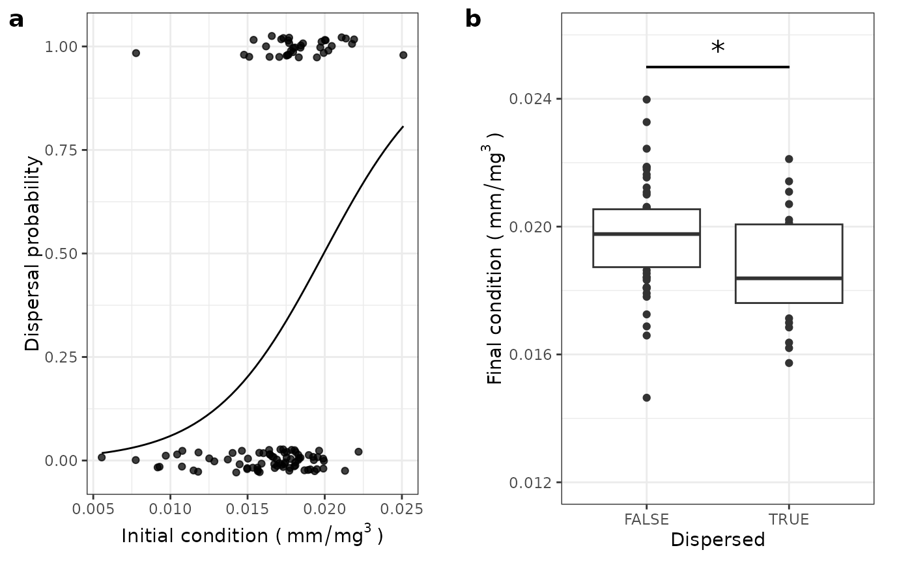

Density dependence
Seba De Bona
DME-020_Density_dependence.RmdOverview & Setup
This vignette evaluates the effects of density manipulation on fitness proxies such as recruitment in the pool, growth, and condition.
Density dependence should lower some (or all) of these life-history traits when density is increased, and viceversa when it’s decreased.
## ── Attaching core tidyverse packages ──────────────────────── tidyverse 2.0.0 ──
## ✔ dplyr 1.1.4 ✔ readr 2.1.5
## ✔ forcats 1.0.0 ✔ stringr 1.5.1
## ✔ ggplot2 3.5.1 ✔ tibble 3.2.1
## ✔ lubridate 1.9.3 ✔ tidyr 1.3.1
## ✔ purrr 1.0.2
## ── Conflicts ────────────────────────────────────────── tidyverse_conflicts() ──
## ✖ dplyr::filter() masks stats::filter()
## ✖ dplyr::lag() masks stats::lag()
## ℹ Use the conflicted package (<http://conflicted.r-lib.org/>) to force all conflicts to become errors##
## Attaching package: 'magrittr'
##
## The following object is masked from 'package:purrr':
##
## set_names
##
## The following object is masked from 'package:tidyr':
##
## extract## Loading required package: carData
##
## Attaching package: 'car'
##
## The following object is masked from 'package:dplyr':
##
## recode
##
## The following object is masked from 'package:purrr':
##
## some## Loading required package: Matrix
##
## Attaching package: 'Matrix'
##
## The following objects are masked from 'package:tidyr':
##
## expand, pack, unpack##
## Attaching package: 'lmerTest'
##
## The following object is masked from 'package:lme4':
##
## lmer
##
## The following object is masked from 'package:stats':
##
## step
library(ggpubr)
# this vignette requires the package guppyDme to be installed. If the user wishes not to install the package, please comment out the "library(guppyDme)" line and run instead the lines commented out below
#### If you have the guppyDme package installed
# loading package
library(guppyDme)
# #### If you do NOT wish to install the guppyDme package, please uncomment and run the following two lines of code, adding the package functions to the Global Environment and loading the data
# source(file.path(here::here(), "R", "package_functions.R"))
# load(file.path(here::here(), "data", "DMEdata.rda"))
# loading the necessary data
data <- DMEdata %>%
mutate(sex_stage = score_sexst(., f_threshold = 14, f_unit = "SL"),
sex_stage = factor(sex_stage, levels = c("I", "M", "F")))
cr_table <- readRDS(file.path(here::here(), "vignettes", "DME_cr_data.rds"))
treatment_tab <- readRDS(file.path(here::here(), "vignettes",
"DME_density_factor_in_treatments.rds"))To make the interpretation of the following analyses easier, we will
center the variable density_factor (representing by how
much, proportionally, density was modified) to 1. This way, all
intercepts will refer to what happened in the control treatment. We will
also filter out the pools that were not part of the experiment, and
therefore that we are not interested in.
Since multiple authors took the measurements of standard length, to account for any bias in measurement we will include as a random factor in the models for growth the sequence of individuals who measured the fish in the capture and recapture instance.
Growth
Growth & Dispersal
For growth, we will consider the effect of density manipulation on the change in standard length (SL) with a Linear mixed model. We will include whether an individuals has moved or not as a covariate, to compare the effect of dispersal on growth (testing whether dispersal is beneficial or not). Density factor is now centered on 1, so in the intercept we have the control pool (for which density factor was 1).
To standardize growth across different streams, where fish were left for different amounts of time, we will analyse growth over thirty days. We will also scale SL, so the intercept does not refer to 0 length, but the average length.
Stream_ID will be included as a random factor to account
for differences in slope, shading etc. A factor that accounts for the
sequence of authors who measured the fish will be included to rule out
biases in SL measure.
cr_table %<>%
mutate(growth_30 = growth*30/as.numeric(interval))
cr_table %>%
filter(growth_30 > 10)## # A tibble: 1 × 26
## markID streamID treatment sex_stage_0 patch_0 habitat_0 SL_0 weight_0
## <fct> <fct> <fct> <chr> <chr> <fct> <dbl> <dbl>
## 1 6V7P CL1 C F P16-22 E 18.0 0.1
## # ℹ 18 more variables: releaseDate <date>, marker_0 <chr>, patch_1 <fct>,
## # habitat_1 <fct>, sex_stage_1 <chr>, SL_1 <dbl>, weight_1 <dbl>,
## # captureDate <date>, marker_1 <chr>, pool_treat_0 <chr>, pool_treat_1 <chr>,
## # moved <lgl>, hshift <lgl>, interval <drtn>, growth <dbl>,
## # density_factor <dbl>, marker_seq <chr>, growth_30 <dbl>
# the individual recaptured after 9 days has a recorded growth which is unbelievable
# when extrapolated. This can be due to undermeasuring, followed by overmeasuring,
# and then extrapolated from the early growth. I will remove this individual.
cr_table %<>%
filter(growth_30 < 10) %>%
mutate(SL_0s = scale(SL_0))
g0 <- lmer(growth_30 ~ SL_0s*moved*density_factor +
(1|streamID) + (1|marker_seq),
data = cr_table %>% filter(sex_stage_0 == "I"),
na.action = na.omit)
# the three way interaction is not significant and can be dropped
g1 <- lmer(growth_30 ~ (SL_0s+moved+density_factor)^2 +
(1|streamID) + (1|marker_seq),
data = cr_table,
na.action = na.omit)
# dropping SL x density
g2 <- lmer(growth_30 ~ SL_0s*moved + moved*density_factor +
(1|streamID) + (1|marker_seq),
data = cr_table,
na.action = na.omit)
# dropping moved x density
g3 <- lmer(growth_30 ~ SL_0s*moved + density_factor +
(1|streamID) + (1|marker_seq),
data = cr_table,
na.action = na.omit)
# stargazer needs objects that belong to lmer class, not lmerTest
class(g0) <- class(g1) <- class(g2) <- class(g3) <- "lmerMod"
stargazer::stargazer(g0, g1, g2, g3,
type = "html", report = ('vcp*'),
title = "Model selection (continous density)",
dep.var.labels = 'Growth (mm/month)',
column.sep.width = "10pt",
omit.stat = c("bic"),
star.char = c('.', '*', '**'))| Dependent variable: | ||||
| Growth (mm/month) | ||||
| (1) | (2) | (3) | (4) | |
| SL_0s | -3.220 | -1.205 | -1.212 | -1.211 |
| p = 0.000** | p = 0.000** | p = 0.000** | p = 0.000** | |
| moved | 0.712 | -0.634 | -0.630 | -0.565 |
| p = 0.243 | p = 0.0001** | p = 0.0001** | p = 0.0002** | |
| density_factor | -1.077 | -1.160 | -1.104 | -0.937 |
| p = 0.230 | p = 0.00001** | p = 0.00001** | p = 0.00001** | |
| SL_0s:moved | 2.529 | 0.527 | 0.545 | 0.560 |
| p = 0.007** | p = 0.022* | p = 0.017* | p = 0.014* | |
| SL_0s:density_factor | 0.080 | 0.142 | ||
| p = 0.950 | p = 0.484 | |||
| movedTRUE:density_factor | 0.753 | 0.756 | 0.689 | |
| p = 0.589 | p = 0.116 | p = 0.144 | ||
| SL_0s:movedTRUE:density_factor | -0.312 | |||
| p = 0.902 | ||||
| Constant | -0.534 | 0.843 | 0.839 | 0.834 |
| p = 0.239 | p = 0.004** | p = 0.004** | p = 0.005** | |
| Observations | 76 | 312 | 312 | 312 |
| Log Likelihood | -106.934 | -471.811 | -471.379 | -472.612 |
| Akaike Inf. Crit. | 235.867 | 963.623 | 960.759 | 961.224 |
| Note: | p<0.1; p<0.05; p<0.01 | |||
Smaller individuals who stay grow more compared to larger ones, hence the negative effect of initial standard length. Among the individuals who stay, higher densities cause growth to be lower. Individuals that disperse have lower growth compared to those who stay, if they are small. Larger individuals that disperse (from any treatment), on the other hand, grow more.
To make sure we are not missing non-linear effects of the treatment,
we will run the same model with density expressed as a factor
(treatment).
g0b <- lmer(growth_30 ~ SL_0s*moved*treatment +
(1|streamID) + (1|marker_seq),
data = cr_table,
na.action = na.omit)
# 3-way can be dropped
g1b <- lmer(growth_30 ~ (SL_0s+moved+treatment)^2 +
(1|streamID) + (1|marker_seq),
data = cr_table,
na.action = na.omit)
class(g0b) <- class(g1b) <- "lmerMod"
stargazer::stargazer(g0b, g1b,
type = "html", report = ('vcp*'),
title = "Model selection (factorial treatments)",
dep.var.labels = 'Growth (mm/month)',
column.sep.width = "10pt",
omit.stat = c("bic"),
star.char = c('.', '*', '**'))| Dependent variable: | ||
| Growth (mm/month) | ||
| (1) | (2) | |
| SL_0s | -1.399 | -1.390 |
| p = 0.000** | p = 0.000** | |
| moved | -0.377 | -0.374 |
| p = 0.095. | p = 0.096. | |
| treatmentD | 0.903 | 0.915 |
| p = 0.00002** | p = 0.00002** | |
| treatmentI | -0.132 | -0.133 |
| p = 0.419 | p = 0.413 | |
| SL_0s:moved | 0.615 | 0.521 |
| p = 0.057. | p = 0.023* | |
| SL_0s:treatmentD | 0.279 | 0.249 |
| p = 0.101 | p = 0.128 | |
| SL_0s:treatmentI | 0.424 | 0.422 |
| p = 0.023* | p = 0.016* | |
| movedTRUE:treatmentD | -0.944 | -0.899 |
| p = 0.033* | p = 0.039* | |
| movedTRUE:treatmentI | -0.155 | -0.157 |
| p = 0.642 | p = 0.635 | |
| SL_0s:movedTRUE:treatmentD | -0.418 | |
| p = 0.498 | ||
| SL_0s:movedTRUE:treatmentI | -0.049 | |
| p = 0.927 | ||
| Constant | 0.684 | 0.683 |
| p = 0.013* | p = 0.013* | |
| Observations | 312 | 312 |
| Log Likelihood | -469.182 | -470.073 |
| Akaike Inf. Crit. | 968.363 | 966.147 |
| Note: | p<0.1; p<0.05; p<0.01 | |
AIC(g3, g1b)## df AIC
## g3 8 961.2237
## g1b 13 966.1466When treatment is included as a factor variable, the best fit model changes. The AIC difference though is > 4, so we will pick the model with density as a continuous factor. Below are some plots to visualize the results.
alpha <- summary(g3)$coefficients["(Intercept)", "Estimate"]
b_size <- summary(g3)$coefficients["SL_0s", "Estimate"]
cr_table %<>%
mutate(pred_growth = alpha + b_size*SL_0s,
res = growth_30 - pred_growth)
alt_data <- cr_table %>%
mutate(treatment = plyr::mapvalues(treatment,
c("D", "C", "I"),
c("decreased", "control", "increased")),
treatment = factor(treatment, levels=c("decreased", "control", "increased")),
boxplot_position = case_when(
treatment == "decreased" ~ -0.5,
treatment == "control" ~ 0,
treatment == "increased" ~ 0.5
))
pres <- ggplot(alt_data,
aes(x = density_factor, y = res, group = treatment)) +
geom_hline(yintercept = 0,
linetype = "dashed",
linewidth = 0.4) +
ylab("Growth residuals") + xlab("Proportional change in density") +
geom_boxplot(aes(x = boxplot_position,
y = res,
fill = treatment),
alpha = 0.5,
outliers = F,
coef = 0) +
geom_jitter(aes(shape=treatment,
fill = treatment),
position=position_jitter(0.03),
alpha = .75) +
scale_shape_manual(values = c(25, 22, 24)) +
scale_x_continuous(breaks = c(-0.5, 0, 0.5)) +
scale_fill_manual(values = c("#ffb14e", "#cd34b5", "#0000ff")) +
#scale_color_manual(values = c("#ffb14e", "#cd34b5", "#0000ff")) +
theme_bw() +
theme(legend.position = "inside",
legend.position.inside = c(0.80,0.85),
legend.background = element_rect(fill = "transparent"),
plot.margin = unit(c(0.5,1.5,0.5,1), "lines"))
# now plotting size x moved interaction on growth
sls <- modelr::seq_range(cr_table$SL_0, n = 50)
ds <- 0
mv <- c(FALSE, TRUE)
newdata <- expand.grid(SL_0 = sls,
moved = mv,
density_factor = ds) %>%
mutate(SL_0s = (SL_0 - attr(cr_table$SL_0s, "scaled:center"))/
attr(cr_table$SL_0s, "scaled:scale"),
dispersed = plyr::mapvalues(moved,
c(TRUE, FALSE),
c("YES", "NO")),
dispersed = factor(dispersed))
newdata %<>%
add_column(pred = predict(g3, newdata = newdata, re.form = ~0))
alt_data <- cr_table %>%
mutate(dispersed = plyr::mapvalues(moved,
c(TRUE, FALSE),
c("YES", "NO")),
dispersed = factor(dispersed))
plen <- ggplot(alt_data, aes(x = SL_0, y = growth_30, group)) +
ylab("Growth (mm/month)") + xlab("Initial standard length (mm)") +
geom_point(alpha = .75, aes(shape = dispersed,
col = dispersed)) +
geom_line(data = newdata, aes(x = SL_0, y = pred,
linetype = dispersed,
color = dispersed),
size = 0.5) +
scale_shape_manual(values = c(21, 8)) +
scale_color_manual(values = c("#fa8775", "#9d02d7")) +
theme_bw() +
theme(legend.position = "inside",
legend.position.inside = c(0.85, .85),
legend.background = element_rect(fill = "transparent"),
plot.margin = unit(c(0.5,1.5,0.5,1), "lines"))## Warning: Using `size` aesthetic for lines was deprecated in ggplot2 3.4.0.
## ℹ Please use `linewidth` instead.
## This warning is displayed once every 8 hours.
## Call `lifecycle::last_lifecycle_warnings()` to see where this warning was
## generated.
jpeg(file.path(here::here(), "vignettes", "figures", "growth_by_treatment_and_dispersal.jpeg"),
width = 8, height = 4.5, units = "in", res = 400)
ggarrange(pres, plen, labels = c("a", "b"))
dev.off()## agg_png
## 2Plotted on the left are, on the y axis, the residual growth values when standard length alone is ruled out. This is done by calculating the predicted growth of individuals of a given standard length.
Growth & Habitat change
It might be interesting to check for effects of habitat shift on growth for individuals who remain. We might expect that individuals who moved to a different habitat would grow more. If the opposite is true, this could suggest individuals being forced into suboptimal habitats and paying the consequences in terms of growth.
# we'll try to model with density as a continuous variable first
gh0 <- lmer(growth_30 ~ SL_0s*hshift*density_factor +
(1|streamID) + (1|marker_seq),
data = cr_table %>% filter(!moved),
na.action = na.omit)
# 3-way can go
gh1 <- lmer(growth_30 ~ (SL_0s+hshift+density_factor)^2 +
(1|streamID) + (1|marker_seq),
data = cr_table %>% filter(!moved),
na.action = na.omit)
# hshift x density can go
gh2 <- lmer(growth_30 ~ SL_0s*hshift+ SL_0s*density_factor +
(1|streamID) + (1|marker_seq),
data = cr_table %>% filter(!moved),
na.action = na.omit)
# SL x density
gh3 <- lmer(growth_30 ~ SL_0s*hshift + density_factor +
(1|streamID) + (1|marker_seq),
data = cr_table %>% filter(!moved),
na.action = na.omit)
# SL x hshift
gh4 <- lmer(growth_30 ~ SL_0s + hshift + density_factor +
(1|streamID) + (1|marker_seq),
data = cr_table %>% filter(!moved),
na.action = na.omit)
# and With density as a factor
gh0b <- lmer(growth_30 ~ SL_0s*treatment*hshift +
(1|streamID) + (1|marker_seq),
data = cr_table %>% filter(!moved),
na.action = na.omit)
AIC(gh4, gh0b)## df AIC
## gh4 7 778.8988
## gh0b 15 782.1826
# the difference in AIC is small, so I will consider the most complex model
summary(gh0b)## Linear mixed model fit by REML. t-tests use Satterthwaite's method [
## lmerModLmerTest]
## Formula: growth_30 ~ SL_0s * treatment * hshift + (1 | streamID) + (1 |
## marker_seq)
## Data: cr_table %>% filter(!moved)
##
## REML criterion at convergence: 752.2
##
## Scaled residuals:
## Min 1Q Median 3Q Max
## -3.1127 -0.7251 -0.0225 0.6110 3.6448
##
## Random effects:
## Groups Name Variance Std.Dev.
## marker_seq (Intercept) 0.1942 0.4406
## streamID (Intercept) 0.1630 0.4038
## Residual 1.1638 1.0788
## Number of obs: 246, groups: marker_seq, 5; streamID, 3
##
## Fixed effects:
## Estimate Std. Error df t value Pr(>|t|)
## (Intercept) 0.86759 0.35551 5.65285 2.440 0.0529 .
## SL_0s -1.21348 0.12845 231.02435 -9.447 <2e-16 ***
## treatmentD 0.72305 0.30410 231.81885 2.378 0.0182 *
## treatmentI -0.00949 0.33375 230.18717 -0.028 0.9773
## hshiftTRUE -0.43937 0.20309 231.72551 -2.163 0.0315 *
## SL_0s:treatmentD -0.08930 0.28312 229.45298 -0.315 0.7527
## SL_0s:treatmentI 0.13965 0.32286 230.28961 0.433 0.6658
## SL_0s:hshiftTRUE -0.53196 0.20665 230.94018 -2.574 0.0107 *
## treatmentD:hshiftTRUE 0.31333 0.43338 232.04699 0.723 0.4704
## treatmentI:hshiftTRUE 0.07731 0.40311 231.68950 0.192 0.8481
## SL_0s:treatmentD:hshiftTRUE 0.81313 0.37166 230.09335 2.188 0.0297 *
## SL_0s:treatmentI:hshiftTRUE 0.62011 0.40841 229.76495 1.518 0.1303
## ---
## Signif. codes: 0 '***' 0.001 '**' 0.01 '*' 0.05 '.' 0.1 ' ' 1
##
## Correlation of Fixed Effects:
## (Intr) SL_0s trtmnD trtmnI hsTRUE SL_0s:D SL_0s:I SL_0:T tD:TRU
## SL_0s -0.116
## treatmentD -0.193 0.107
## treatmentI -0.157 0.144 0.173
## hshiftTRUE -0.268 0.172 0.355 0.253
## SL_0s:trtmD 0.057 -0.444 -0.245 -0.059 -0.097
## SL_0s:trtmI 0.057 -0.411 -0.054 -0.540 -0.069 0.180
## SL_0s:hTRUE 0.037 -0.597 -0.055 -0.072 -0.159 0.265 0.239
## trtmnD:TRUE 0.123 -0.074 -0.703 -0.118 -0.503 0.176 0.031 0.068
## trtmnI:TRUE 0.133 -0.133 -0.183 -0.842 -0.499 0.059 0.460 0.090 0.256
## SL_0:D:TRUE -0.023 0.337 0.198 0.047 0.117 -0.763 -0.138 -0.552 -0.285
## SL_0:I:TRUE -0.021 0.307 0.044 0.414 0.088 -0.137 -0.777 -0.505 -0.046
## tI:TRU SL_0:D:
## SL_0s
## treatmentD
## treatmentI
## hshiftTRUE
## SL_0s:trtmD
## SL_0s:trtmI
## SL_0s:hTRUE
## trtmnD:TRUE
## trtmnI:TRUE
## SL_0:D:TRUE -0.075
## SL_0:I:TRUE -0.413 0.285
summary(gh4)## Linear mixed model fit by REML. t-tests use Satterthwaite's method [
## lmerModLmerTest]
## Formula: growth_30 ~ SL_0s + hshift + density_factor + (1 | streamID) +
## (1 | marker_seq)
## Data: cr_table %>% filter(!moved)
##
## REML criterion at convergence: 764.9
##
## Scaled residuals:
## Min 1Q Median 3Q Max
## -3.2846 -0.6298 -0.0045 0.5820 2.7919
##
## Random effects:
## Groups Name Variance Std.Dev.
## marker_seq (Intercept) 0.1934 0.4398
## streamID (Intercept) 0.1571 0.3963
## Residual 1.2262 1.1073
## Number of obs: 246, groups: marker_seq, 5; streamID, 3
##
## Fixed effects:
## Estimate Std. Error df t value Pr(>|t|)
## (Intercept) 0.94022 0.34297 5.37991 2.741 0.0377 *
## SL_0s -1.20859 0.07609 239.85239 -15.883 < 2e-16 ***
## hshiftTRUE -0.24619 0.14986 239.84849 -1.643 0.1017
## density_factor -0.98639 0.24652 240.47139 -4.001 8.39e-05 ***
## ---
## Signif. codes: 0 '***' 0.001 '**' 0.01 '*' 0.05 '.' 0.1 ' ' 1
##
## Correlation of Fixed Effects:
## (Intr) SL_0s hsTRUE
## SL_0s -0.083
## hshiftTRUE -0.253 0.022
## densty_fctr 0.026 0.000 -0.212Let’s plot the data together with the predictions from the factorial treatment model.
tts <- levels(cr_table$treatment)
hs <- c("NO", "YES")
newdata_hab <- expand.grid(SL_0 = sls,
hshift = hs,
treatment = tts) %>%
mutate(SL_0s = (SL_0 - attr(cr_table$SL_0s, "scaled:center"))/
attr(cr_table$SL_0s, "scaled:scale"),
hshift = factor(hshift),
treatment_f = factor(treatment, levels = c("D", "C", "I"))) %>%
add_column(hab_pred = predict(gh0b, newdata = ., re.form = ~0))
alt_data <- cr_table %>%
mutate(treatment_f = factor(treatment, levels = c("D", "C", "I")),
hshift = plyr::mapvalues(hshift,
c(FALSE, TRUE),
c("NO", "YES")),
hshift = factor(hshift, levels = levels(newdata_hab$hshift)))
labelss_treat <- c("D" = "decreased",
"C" = "control",
"I" = "increased")
pgh <- ggplot(alt_data %>% filter(!is.na(hshift)), aes(x = SL_0, y = growth_30)) +
ylab("Growth (mm/month)") + xlab("Initial standard length (mm)") +
geom_point(alpha = 1,
aes(shape = hshift,
color = hshift)) +
scale_shape_manual(values = c(21, 8)) +
geom_line(data = newdata_hab, aes(x = SL_0, y = hab_pred, linetype = hshift,
color = hshift),
size = 0.5) +
facet_grid( ~ treatment_f,
labeller = labeller(treatment_f = labelss_treat)) +
scale_color_manual(values = c("#fa8775", "#9d02d7")) +
theme_bw() +
labs(linetype = "microhabitat \nshift",
color = "microhabitat \nshift",
shape = "microhabitat \nshift")
pgh
jpeg(file.path(here::here(), "vignettes", "figures", "growth_by_habitat_and_treatment.jpeg"),
width = 7, height = 4, units = "in", res = 400)
pgh
dev.off()## agg_png
## 2The AIC between the model with density as a continuous and treatment as a factor is < 4, so we will consider here the more complex model.
As expected, in the control larger individuals that do not change their habitat grow less (- SL: p < 0.001). Individuals that do change their habitat in the control treatment experience an even smaller growth (- hshift: p = 0.031), especially if large (- SL x hshift: p = 0.010). This can be due to the fact that large individuals hold good quality microhabitats at equilibrium conditions. Average sized individuals in the decreased treatment have higher growth than in the control and increased density treatment, if they do not disperse. This again, makes sense given lower density provides weaker competition. Moreover, large individuals in the decreased density treatment benefit from shifting their habitat (SL x treatment x hshift: p = 0.013).
Condition
Condition & Dispersal
An even shorter-term measure of fitness is individual condition. With time, the idea is to evaluate the fat content of the preserved guppies, but for now we can use a proxy for condition in the ratio between weight and SL3.
Pregnancy in females complicates the picture, since female might gain weight due to the development of embryos. So condition can only be assessed for males and immature females.
Here I am just plotting weight over length to visualize the relationship and see if there are crazy outliers that need to be checked.
labelss_recap <- c("0" = "capture",
"1" = "recapture")
ggplot(data %>% filter(!is.na(sex_stage), streamID != "TM"),
aes(x = as.numeric(SL), y = weight, color = sex_stage)) +
geom_point(alpha = 0.2) +
scale_colour_manual(values = c("#1E88E5", "#FFC107", "#004D40")) +
xlab("Standard length (mm)") + ylab("Weight (g)") +
facet_grid(~recap, labeller = labeller(recap = labelss_recap))## Warning in FUN(X[[i]], ...): NAs introduced by coercion## Warning: Removed 970 rows containing missing values or values outside the scale range
## (`geom_point()`).All seems fine.
It is not a concern here, but when looking at the regression size-weight of fish in TM, many males and juvenile males appear to have a very high weight. The reported weight here matches with the physical datasheets, so it’s not a typographical error. This can be due to masculinized females, found sometimes in Taylor specifically.
We can now calculate condition, making sure to remove mature females (whose estimated condition is affected by pregnancy). Since the length is in mm and the weight in grams, the numbers are very small. We will multiply the measures by 103 to turn it into a measure in the unit mg/mm3.
As done for growth, we will calculate here difference in condition over 30 days. we will also calculate the relative change in condition over 30 days, as:
cr_table %<>%
mutate(condition_0 = ifelse(sex_stage_0 %in% c("I", "M"),
weight_0*1000/(SL_0^3),
NA),
condition_1 = ifelse(sex_stage_1 %in% c("I", "M"),
weight_1*1000/(SL_1^3),
NA),
cond_diff = condition_1-condition_0,
cond_diff_30 = cond_diff*30/as.numeric(interval),
rel_cond_change = (condition_1-condition_0)/(condition_0*as.numeric(interval)))
hist(cr_table$cond_diff_30)
hist(cr_table$rel_cond_change)We can now test the effect of density on condition. We will adopt a stepwise model simplification by removing non-significant interactions and main effects, as we have done so far.
c0 <- lmer(cond_diff_30 ~ SL_0s * density_factor * moved +
(1|marker_seq) + (1|streamID),
data = cr_table,
na.action = na.omit)
# I can remove the 3-way interaction
c1 <- lmer(cond_diff_30 ~ (SL_0s + density_factor + moved)^2 +
(1|marker_seq) + (1|streamID),
data = cr_table,
na.action = na.omit)
# density x moved can be removed too
c2 <- lmer(cond_diff_30 ~ SL_0s*density_factor + SL_0s*moved +
(1|marker_seq) + (1|streamID),
data = cr_table,
na.action = na.omit)
# density x SL
c3 <- lmer(cond_diff_30 ~ SL_0s + SL_0s*moved +
(1|marker_seq) + (1|streamID),
data = cr_table,
na.action = na.omit)
# SL x moved
c4 <- lmer(cond_diff_30 ~ SL_0s + density_factor + moved +
(1|marker_seq) + (1|streamID),
data = cr_table,
na.action = na.omit)
# density
c5 <- lmer(cond_diff_30 ~ SL_0s + moved +
(1|marker_seq) + (1|streamID),
data = cr_table,
na.action = na.omit)
# size
c6 <- lmer(cond_diff_30 ~ moved +
(1|marker_seq) + (1|streamID),
data = cr_table,
na.action = na.omit)## boundary (singular) fit: see help('isSingular')
summary(c6)## Linear mixed model fit by REML. t-tests use Satterthwaite's method [
## lmerModLmerTest]
## Formula: cond_diff_30 ~ moved + (1 | marker_seq) + (1 | streamID)
## Data: cr_table
##
## REML criterion at convergence: -489.1
##
## Scaled residuals:
## Min 1Q Median 3Q Max
## -2.7823 -0.5085 -0.0766 0.5722 2.4954
##
## Random effects:
## Groups Name Variance Std.Dev.
## marker_seq (Intercept) 2.621e-06 0.001619
## streamID (Intercept) 0.000e+00 0.000000
## Residual 9.006e-06 0.003001
## Number of obs: 59, groups: marker_seq, 4; streamID, 3
##
## Fixed effects:
## Estimate Std. Error df t value Pr(>|t|)
## (Intercept) 0.0036612 0.0009591 3.6081816 3.817 0.022737 *
## movedTRUE -0.0033462 0.0008420 54.9251497 -3.974 0.000208 ***
## ---
## Signif. codes: 0 '***' 0.001 '**' 0.01 '*' 0.05 '.' 0.1 ' ' 1
##
## Correlation of Fixed Effects:
## (Intr)
## movedTRUE -0.319
## optimizer (nloptwrap) convergence code: 0 (OK)
## boundary (singular) fit: see help('isSingular')
class(c0) = class(c1) = class(c2) = class(c3) = class(c4) = class(c5) = class(c6) <- "lmerMod"
stargazer::stargazer(c0, c1, c2, c3, c4, c5, c6,
type = "html", report = ('vcp*'),
title = "Model selection (factorial treatments)",
dep.var.labels = 'Condition (mg/mm^3)',
column.sep.width = "10pt",
omit.stat = c("bic"),
star.char = c('.', '*', '**'))| Dependent variable: | |||||||
| Condition (mg/mm | |||||||
| (1) | (2) | (3) | (4) | (5) | (6) | (7) | |
| SL_0s | -0.004 | -0.004 | -0.004 | -0.004 | -0.002 | -0.002 | |
| p = 0.011* | p = 0.011* | p = 0.008** | p = 0.006** | p = 0.065. | p = 0.062. | ||
| density_factor | -0.001 | -0.0002 | 0.0001 | -0.001 | |||
| p = 0.702 | p = 0.925 | p = 0.965 | p = 0.521 | ||||
| moved | -0.001 | -0.001 | -0.001 | -0.001 | -0.003 | -0.003 | -0.003 |
| p = 0.688 | p = 0.540 | p = 0.557 | p = 0.507 | p = 0.004** | p = 0.003** | p = 0.0001** | |
| SL_0s:density_factor | -0.003 | -0.001 | -0.001 | ||||
| p = 0.547 | p = 0.791 | p = 0.830 | |||||
| SL_0s:moved | 0.006 | 0.006 | 0.006 | 0.006 | |||
| p = 0.054. | p = 0.066. | p = 0.065. | p = 0.038* | ||||
| density_factor:moved | 0.002 | 0.001 | |||||
| p = 0.561 | p = 0.834 | ||||||
| SL_0s:density_factor:moved | 0.005 | ||||||
| p = 0.521 | |||||||
| Constant | 0.002 | 0.002 | 0.002 | 0.002 | 0.003 | 0.003 | 0.004 |
| p = 0.224 | p = 0.230 | p = 0.229 | p = 0.181 | p = 0.033* | p = 0.034* | p = 0.0002** | |
| Observations | 59 | 59 | 59 | 59 | 59 | 59 | 59 |
| Log Likelihood | 218.514 | 222.217 | 227.129 | 237.428 | 234.792 | 240.326 | 244.525 |
| Akaike Inf. Crit. | -415.028 | -424.434 | -436.259 | -460.856 | -455.584 | -468.653 | -479.050 |
| Note: | p<0.1; p<0.05; p<0.01 | ||||||
The best model predicts condition differential to be most negative when individuals disperse. This means that, on average, an individual is more likely decrease in body condition if dispersing. The result makes sense considering how costly dispersal can be. Moreover, large individuals have smaller gains of condition, but not significantly. The trend observed seems to be mostly determined by what happens in the control treatment (very few datapoints all together).
Once again, we can run a model with treatment as a categorical variable to check for asymmetries.
c0b <- lmer(cond_diff_30 ~ SL_0s * treatment * moved +
(1|marker_seq) + (1|streamID),
data = cr_table,
na.action = na.omit)
# here a bunch of interactions are significant
summary(c0b)## Linear mixed model fit by REML. t-tests use Satterthwaite's method [
## lmerModLmerTest]
## Formula: cond_diff_30 ~ SL_0s * treatment * moved + (1 | marker_seq) +
## (1 | streamID)
## Data: cr_table
##
## REML criterion at convergence: -410.6
##
## Scaled residuals:
## Min 1Q Median 3Q Max
## -1.70001 -0.57871 -0.06693 0.66484 2.07960
##
## Random effects:
## Groups Name Variance Std.Dev.
## marker_seq (Intercept) 2.962e-06 0.0017209
## streamID (Intercept) 3.761e-07 0.0006133
## Residual 6.686e-06 0.0025858
## Number of obs: 59, groups: marker_seq, 4; streamID, 3
##
## Fixed effects:
## Estimate Std. Error df t value Pr(>|t|)
## (Intercept) 6.329e-04 1.721e-03 2.127e+01 0.368 0.71671
## SL_0s -6.897e-03 2.084e-03 4.436e+01 -3.309 0.00186 **
## treatmentD 1.186e-03 2.576e-03 4.311e+01 0.460 0.64764
## treatmentI 1.939e-03 1.876e-03 4.500e+01 1.034 0.30685
## movedTRUE 7.763e-05 2.344e-03 4.578e+01 0.033 0.97372
## SL_0s:treatmentD 6.466e-03 3.587e-03 4.361e+01 1.802 0.07838 .
## SL_0s:treatmentI 7.509e-03 3.481e-03 4.448e+01 2.157 0.03644 *
## SL_0s:movedTRUE 1.471e-02 5.619e-03 4.525e+01 2.617 0.01202 *
## treatmentD:movedTRUE -3.967e-04 3.475e-03 3.815e+01 -0.114 0.90971
## treatmentI:movedTRUE -5.706e-04 3.169e-03 4.426e+01 -0.180 0.85794
## SL_0s:treatmentD:movedTRUE -1.639e-02 7.097e-03 4.481e+01 -2.309 0.02562 *
## SL_0s:treatmentI:movedTRUE -1.258e-02 7.767e-03 4.406e+01 -1.620 0.11240
## ---
## Signif. codes: 0 '***' 0.001 '**' 0.01 '*' 0.05 '.' 0.1 ' ' 1
##
## Correlation of Fixed Effects:
## (Intr) SL_0s trtmnD trtmnI mvTRUE SL_0s:D SL_0s:I SL_0:T tD:TRU
## SL_0s 0.750
## treatmentD -0.401 -0.435
## treatmentI -0.641 -0.691 0.341
## movedTRUE -0.539 -0.568 0.310 0.437
## SL_0s:trtmD -0.406 -0.549 0.862 0.354 0.322
## SL_0s:trtmI -0.438 -0.569 0.248 0.811 0.265 0.298
## SL_0s:mTRUE -0.330 -0.386 0.167 0.259 0.794 0.212 0.182
## trtmnD:TRUE 0.324 0.333 -0.756 -0.237 -0.653 -0.651 -0.150 -0.513
## trtmnI:TRUE 0.370 0.404 -0.223 -0.537 -0.711 -0.225 -0.422 -0.561 0.472
## SL_0:D:TRUE 0.253 0.290 -0.438 -0.194 -0.612 -0.510 -0.139 -0.778 0.594
## SL_0:I:TRUE 0.211 0.257 -0.120 -0.345 -0.530 -0.135 -0.421 -0.688 0.358
## tI:TRU SL_0:D:
## SL_0s
## treatmentD
## treatmentI
## movedTRUE
## SL_0s:trtmD
## SL_0s:trtmI
## SL_0s:mTRUE
## trtmnD:TRUE
## trtmnI:TRUE
## SL_0:D:TRUE 0.421
## SL_0:I:TRUE 0.815 0.527
AIC(c3, c0b)## df AIC
## c3 7 -460.8564
## c0b 15 -380.5707The factorial treatment shows different results. The AIC between the two models is quite drastic (> 80), and the model with density as a continuous provides a better fit.
cdp <- ggplot(cr_table, aes(x = moved,
y = cond_diff_30,
fill = moved)) +
geom_boxplot(coef = 0,
outliers = FALSE,
alpha = 0.75) +
xlab("Dispersal") + ylab("Relative change in condition") +
ylim(c(-0.01, 0.015)) +
geom_jitter(shape=21, position=position_jitter(0.02), alpha = 0.75) +
scale_x_discrete(labels = c("NO", "YES")) +
scale_fill_manual(values = c("#fa8775", "#9d02d7")) +
geom_segment(aes(x = 1, xend = 2, y = 0.013, yend = 0.013), color = "black") +
annotate("text", x = 1.5, y = 0.0135, label = "*", size = 6) +
theme_bw() +
theme(plot.margin = unit(c(0.5,1.5,0.5,1),
"lines"),
legend.position = "none")
cdp## Warning: Removed 302 rows containing non-finite outside the scale range
## (`stat_boxplot()`).## Warning: Removed 302 rows containing missing values or values outside the scale range
## (`geom_point()`).
# jpeg(file.path(here::here(), "vignettes", "condition_dispersal.jpeg"),
# width = 3, height = 3.5, units = "in", res = 400)
# cdp
# dev.off()Below we plot the results when treatment is considered as a factor (model that was discarded according to AIC values).
newdata_cond <- expand.grid(SL_0 = sls,
treatment = tts,
moved = mv) %>%
mutate(SL_0s = (SL_0 - attr(cr_table$SL_0s, "scaled:center"))/
attr(cr_table$SL_0s, "scaled:scale"),
moved = factor(moved),
treatment_f = factor(treatment, levels = c("D", "C", "I"))) %>%
add_column(c_pred = predict(c0b, newdata = ., re.form = ~ 0))
p <- ggplot(cr_table %>% filter(sex_stage_1 %in% c("I", "M")),
aes(x = SL_0, y = cond_diff_30)) +
xlim(12, 21) +
ylab(bquote("Change in condition (" ~ mm/mg^3~")")) + xlab("Initial standard length (mm)") +
geom_point(alpha = .5, aes(colour = streamID, shape = moved)) +
scale_color_manual(values=c("#DAA323", "#691E92", "#199958")) +
scale_shape_manual(values = c(16, 8)) +
geom_line(data = newdata_cond, aes(x = SL_0, y = c_pred, linetype = moved), size = 0.5) +
facet_grid( ~ treatment_f,
labeller = labeller(treatment_f = labelss_treat)) +
ggtitle("Effect of density and dispersal on condition")
annotate_figure(p, top = text_grob("This model was rejected (Delta AIC >> 4)",
color = "red", vjust = 7, size = 14))## Warning: Removed 186 rows containing missing values or values outside the scale range
## (`geom_point()`).## Warning: Removed 58 rows containing missing values or values outside the scale range
## (`geom_line()`).In order to prove that dispersal decreases condition, and not that individual of lower condition disperse, we will run here a model where initial condition is the explanatory variable, and dispersal the response.
# first, I am testing whether initial condition affects dispersal
c_d <- glmer(moved ~ condition_0 +
(1|marker_0) + (1|streamID),
data = cr_table,
family = "binomial",
na.action = na.omit)## boundary (singular) fit: see help('isSingular')
summary(c_d)## Generalized linear mixed model fit by maximum likelihood (Laplace
## Approximation) [glmerMod]
## Family: binomial ( logit )
## Formula: moved ~ condition_0 + (1 | marker_0) + (1 | streamID)
## Data: cr_table
##
## AIC BIC logLik deviance df.resid
## 138.3 149.2 -65.1 130.3 109
##
## Scaled residuals:
## Min 1Q Median 3Q Max
## -1.3678 -0.7174 -0.5020 0.9908 5.4232
##
## Random effects:
## Groups Name Variance Std.Dev.
## streamID (Intercept) 0 0
## marker_0 (Intercept) 0 0
## Number of obs: 113, groups: streamID, 3; marker_0, 2
##
## Fixed effects:
## Estimate Std. Error z value Pr(>|z|)
## (Intercept) -5.543 1.714 -3.234 0.00122 **
## condition_0 277.980 95.868 2.900 0.00374 **
## ---
## Signif. codes: 0 '***' 0.001 '**' 0.01 '*' 0.05 '.' 0.1 ' ' 1
##
## Correlation of Fixed Effects:
## (Intr)
## condition_0 -0.992
## optimizer (Nelder_Mead) convergence code: 0 (OK)
## boundary (singular) fit: see help('isSingular')We tried a model with the interaction between sex_stage
and condition, and the interaction was not significant. We already know
males are more likely to disperse than immature individuals, so there is
no need to keep sex as a fixed effect.
Initial condition significantly affects dispersal, with individuals in good condition more likely to disperse.
Let’s now see if dispersal affects final condition.
d_c <- lmer(condition_1 ~ moved +
(1|marker_0) + (1|streamID),
data = cr_table,
na.action = na.omit)## boundary (singular) fit: see help('isSingular')
summary(d_c)## Linear mixed model fit by REML. t-tests use Satterthwaite's method [
## lmerModLmerTest]
## Formula: condition_1 ~ moved + (1 | marker_0) + (1 | streamID)
## Data: cr_table
##
## REML criterion at convergence: -592.3
##
## Scaled residuals:
## Min 1Q Median 3Q Max
## -2.95123 -0.62091 -0.04051 0.49032 2.42803
##
## Random effects:
## Groups Name Variance Std.Dev.
## streamID (Intercept) 5.087e-07 0.0007132
## marker_0 (Intercept) 0.000e+00 0.0000000
## Residual 2.570e-06 0.0016033
## Number of obs: 62, groups: streamID, 3; marker_0, 2
##
## Fixed effects:
## Estimate Std. Error df t value Pr(>|t|)
## (Intercept) 0.0200976 0.0004906 2.5829428 40.968 0.000105 ***
## movedTRUE -0.0009452 0.0004304 58.2300173 -2.196 0.032094 *
## ---
## Signif. codes: 0 '***' 0.001 '**' 0.01 '*' 0.05 '.' 0.1 ' ' 1
##
## Correlation of Fixed Effects:
## (Intr)
## movedTRUE -0.297
## optimizer (nloptwrap) convergence code: 0 (OK)
## boundary (singular) fit: see help('isSingular')We tested for an interaction between moved and initial condition, and for the main effect of initial condition, and these were not significant (not even when initial condition is alone in the model). Density also did not have a significant effect on condition. Dispersal has a significant and negative effect on final condition.
conds <- data.frame(condition_0 = modelr::seq_range(cr_table$condition_0, n = 50)) %>%
add_column(predicted = plogis(predict(c_d, newdata = ., re.form = ~0)))
c_dplot <- ggplot(
cr_table,
aes(x = condition_0,
y = as.numeric(moved))) +
geom_point(position = position_jitter(height = 0.03),
alpha = 0.75) +
geom_line(data = conds, aes(x = condition_0, y = predicted)) +
xlab(bquote("Initial condition ("~mm/mg^3~")")) + ylab("Dispersal probability") +
theme_bw() +
theme(plot.margin = unit(c(0.5,1.5,0.5,1), "lines"))
d_cplot <- ggplot(cr_table, aes(x = moved, y = condition_1)) +
geom_boxplot(coef = 0) +
ylim(0.012, 0.026) +
ylab(bquote("Final condition ("~mm/mg^3~")")) +
xlab("Dispersed") +
geom_segment(aes(x = 1, xend = 2, y = 0.025, yend = 0.025)) +
annotate("text", x = 1.5, y = 0.0255, label = "*", size = 6) +
theme_bw() +
theme(plot.margin = unit(c(0.5,1.5,0.5,1), "lines"))
ggarrange(c_dplot, d_cplot, labels = c("a", "b"))## Warning: Removed 248 rows containing missing values or values outside the scale range
## (`geom_point()`).## Warning in geom_segment(aes(x = 1, xend = 2, y = 0.025, yend = 0.025)): All aesthetics have length 1, but the data has 361 rows.
## ℹ Please consider using `annotate()` or provide this layer with data containing
## a single row.## Warning: Removed 282 rows containing non-finite outside the scale range
## (`stat_boxplot()`).
# Plotting change in condition with dispersal and effect of initial condition on dispersal
ggarrange(cdp, c_dplot, labels = c("a", "b"))## Warning: Removed 302 rows containing non-finite outside the scale range
## (`stat_boxplot()`).## Warning: Removed 302 rows containing missing values or values outside the scale range
## (`geom_point()`).## Warning: Removed 248 rows containing missing values or values outside the scale range
## (`geom_point()`).
jpeg(file.path(here::here(), "vignettes", "figures", "condition_by_dispersal.jpeg"),
width = 6, height = 3.5, units = "in", res = 400)
ggarrange(cdp, c_dplot, labels = c("a", "b"))## Warning: Removed 302 rows containing non-finite outside the scale range
## (`stat_boxplot()`).## Warning: Removed 302 rows containing missing values or values outside the scale range
## (`geom_point()`).## Warning: Removed 248 rows containing missing values or values outside the scale range
## (`geom_point()`).
dev.off()## agg_png
## 2Condition & Habitat change
For condition too, as we did for growth, we could run a model to observe the short-term effects of habitat change for the individuals who did not disperse.
ch0 <- lmer(cond_diff_30 ~ density_factor*hshift +
(1|marker_seq) + (1|streamID),
data = cr_table %>% filter(!moved),
na.action = na.omit)## boundary (singular) fit: see help('isSingular')
summary(ch0)## Linear mixed model fit by REML. t-tests use Satterthwaite's method [
## lmerModLmerTest]
## Formula: cond_diff_30 ~ density_factor * hshift + (1 | marker_seq) + (1 |
## streamID)
## Data: cr_table %>% filter(!moved)
##
## REML criterion at convergence: -295.4
##
## Scaled residuals:
## Min 1Q Median 3Q Max
## -1.8682 -0.5988 -0.1030 0.4259 2.4104
##
## Random effects:
## Groups Name Variance Std.Dev.
## marker_seq (Intercept) 5.044e-06 2.246e-03
## streamID (Intercept) 1.799e-15 4.241e-08
## Residual 9.096e-06 3.016e-03
## Number of obs: 39, groups: marker_seq, 4; streamID, 3
##
## Fixed effects:
## Estimate Std. Error df t value Pr(>|t|)
## (Intercept) 0.0044640 0.0014048 4.4292973 3.178 0.0291 *
## density_factor 0.0023963 0.0025134 33.0538726 0.953 0.3473
## hshiftTRUE -0.0003129 0.0011419 32.3394696 -0.274 0.7858
## density_factor:hshiftTRUE -0.0069605 0.0036671 32.7694319 -1.898 0.0665 .
## ---
## Signif. codes: 0 '***' 0.001 '**' 0.01 '*' 0.05 '.' 0.1 ' ' 1
##
## Correlation of Fixed Effects:
## (Intr) dnsty_ hsTRUE
## densty_fctr 0.184
## hshiftTRUE -0.395 -0.298
## dnsty_:TRUE -0.166 -0.633 -0.121
## optimizer (nloptwrap) convergence code: 0 (OK)
## boundary (singular) fit: see help('isSingular')
# 3-way is not significant and there's too few datapoints.
ch0b <- lmer(cond_diff_30 ~ (SL_0s + treatment + hshift)^2 +
(1|marker_seq) + (1|streamID),
data = cr_table %>% filter(!moved),
na.action = na.omit)## boundary (singular) fit: see help('isSingular')
summary(ch0b)## Linear mixed model fit by REML. t-tests use Satterthwaite's method [
## lmerModLmerTest]
## Formula: cond_diff_30 ~ (SL_0s + treatment + hshift)^2 + (1 | marker_seq) +
## (1 | streamID)
## Data: cr_table %>% filter(!moved)
##
## REML criterion at convergence: -257.1
##
## Scaled residuals:
## Min 1Q Median 3Q Max
## -1.38934 -0.54046 0.06346 0.32927 2.26504
##
## Random effects:
## Groups Name Variance Std.Dev.
## marker_seq (Intercept) 6.120e-06 0.002474
## streamID (Intercept) 0.000e+00 0.000000
## Residual 5.107e-06 0.002260
## Number of obs: 39, groups: marker_seq, 4; streamID, 3
##
## Fixed effects:
## Estimate Std. Error df t value Pr(>|t|)
## (Intercept) -0.006871 0.003176 26.969424 -2.163 0.03954 *
## SL_0s -0.017661 0.004311 26.626882 -4.097 0.00035 ***
## treatmentD 0.008366 0.003375 26.065258 2.479 0.01998 *
## treatmentI 0.009081 0.002759 26.189681 3.291 0.00285 **
## hshiftTRUE 0.009188 0.003013 26.145689 3.049 0.00520 **
## SL_0s:treatmentD 0.015661 0.005327 26.409273 2.940 0.00674 **
## SL_0s:treatmentI 0.005148 0.003229 26.876563 1.594 0.12253
## SL_0s:hshiftTRUE 0.013378 0.004535 26.471650 2.950 0.00657 **
## treatmentD:hshiftTRUE 0.001341 0.004181 27.356815 0.321 0.75088
## treatmentI:hshiftTRUE -0.009318 0.002935 26.439576 -3.175 0.00379 **
## ---
## Signif. codes: 0 '***' 0.001 '**' 0.01 '*' 0.05 '.' 0.1 ' ' 1
##
## Correlation of Fixed Effects:
## (Intr) SL_0s trtmnD trtmnI hsTRUE SL_0:D SL_0:I SL_0:T tD:TRU
## SL_0s 0.892
## treatmentD -0.736 -0.778
## treatmentI -0.719 -0.742 0.639
## hshiftTRUE -0.815 -0.858 0.736 0.662
## SL_0s:trtmD -0.722 -0.809 0.916 0.601 0.695
## SL_0s:trtmI -0.141 -0.155 0.110 0.275 -0.084 0.125
## SL_0s:hTRUE -0.807 -0.907 0.712 0.623 0.939 0.734 -0.078
## trtmnD:TRUE -0.434 -0.518 0.463 0.296 0.422 0.665 0.034 0.559
## trtmnI:TRUE 0.554 0.569 -0.528 -0.776 -0.728 -0.461 0.258 -0.624 -0.180
## optimizer (nloptwrap) convergence code: 0 (OK)
## boundary (singular) fit: see help('isSingular')
AIC(ch0, ch0b)## df AIC
## ch0 7 -281.4055
## ch0b 13 -231.1079The models differ between density as a continuous and as a factor, but the AIC is large enough that we can pick one. The former is a better fit model, so we will consider that.
The only significant term is the interaction between density and habitat shift.
labelss_hab <- c("FALSE" = "SAME HABITAT",
"TRUE" = "CHANGED HABITAT")
chp <- ggplot(cr_table %>% filter(!moved, !is.na(hshift)),
aes(x = density_factor, y = cond_diff_30, colour = treatment)) +
geom_hline(yintercept = 0, linetype = "dashed", size = 0.4) +
geom_boxplot() +
ylab("difference in condition (mm)") + xlab("density multiplier") +
geom_jitter(shape=16, position=position_jitter(0.02), alpha = .5) +
facet_grid( ~ hshift, labeller = labeller(hshift = labelss_hab)) +
ggtitle("Effect of density and habitat change on condition")
chp## Warning: Removed 246 rows containing non-finite outside the scale range
## (`stat_boxplot()`).## Warning: Removed 246 rows containing missing values or values outside the scale range
## (`geom_point()`).These results are intentionally left out of the paper, since the number of analyses is already limiting in reducing the scope of the study to a clear message.
Pool-level Recruitment
The data for female reproductive allocation published in this study. As a proxy we can look at the recruitment at the pool-level, as the number of newborn (<10 mm) recruited by a given number of adults. This will not give much information on female reproductive output (since the time between capture and recapture will seldom be enough for a female to get pregnant and produce offspring), but rather will give an idea of early-life mortality.
We will calculate the number of adults that were captured in the “control”, “decreased” and “increased” pool, and the number of babies in the same pools, to establish the equilibrium “recruitment” as the proportion of babies per adult in the pool. In each pool, the recruitment , where and correspond to the number of new recruits (individuals < 10 mm) and adults captured in the pool during the first capture, respectively.
We will then calculate the same recruitment proxy after the experiment () as the ratio between the number of the number of new recruits (< 10 mm) recaptured after the experiment ended () and the number of adults released in the pools as part of the experimental density manipulation (). This excludes the individuals removed from the decreased pool, and includes the extra-limital individuals added to the increased pool.
Note: while calculating the standard error for the difference in recruitment, we’ll have to make a few assumptions, since the sample in this case is a single number. In order to calculate the variance of the difference in recruitment, defined as
We will need to assume the covariance between and to be 0, since both are estimated as a single ratio. If we do so,
In addition, we will use the Delta approximation to calculate variance, as
A third assumption is that the count data (number of recruits and number of adults) will be Poisson distributed, making
$$ Var(r) = E(r)\newline Var(a) = E(a) $$
recruits <- data %>%
# only manipulated streams
filter(streamID %in% c("CL1", "CL2", "TL")) %>%
group_by(streamID, patchID) %>%
# we include all individuals captured in a given pool in the accounting of initial recruitment
summarise(adults_0 = sum(!isbabyMark & recap == 0 &
treatment %in% c("C", "D", "I", "R", "XR", "X")),
babies_0 = sum(isbabyMark & recap == 0 &
treatment %in% c("C", "D", "I", "R", "XR", "X")),
adults_1 = sum(!isbabyMark & recap == 0 & treatment %in% c("C", "D", "I")),
babies_1 = sum(isbabyMark & recap == 1)) %>%
filter(!is.na(patchID), adults_0 > 0)## `summarise()` has grouped output by 'streamID'. You can override using the
## `.groups` argument.
# the increased density pools are missing the added extralimital individuals
# first, I will assign to each pool its treatment
patch_to_treat <- data %>%
filter(recap == 0, treatment %in% c("I", "C", "D")) %>%
group_by(streamID, patchID, treatment) %>%
summarise## `summarise()` has grouped output by 'streamID', 'patchID'. You can override
## using the `.groups` argument.
# I can now add the treatment info to the recruits table
recruits <- left_join(patch_to_treat, recruits)## Joining with `by = join_by(streamID, patchID)`
# Now, I can count how many adults were added to the increased pool in each stream
introduced <- data %>%
filter(treatment == "E", !isbabyMark) %>%
group_by(streamID) %>%
summarise(introduced = n())
# now I can merge this, and add the individuals to the introduced pool
# then I can calculate the proportional recruitment
# and the error
recruits %<>%
right_join(introduced) %>%
mutate(adults_1 = ifelse(treatment == "I", adults_1 + introduced, adults_1)) %>%
select(-introduced) %>%
mutate(recruit_0 = babies_0/adults_0,
recruit_1 = babies_1/adults_1,
recruit_0_var = babies_0/(adults_0^2) + babies_0/(adults_0^3),
recruit_1_var = babies_1/(adults_1^2) + babies_1/(adults_1^3),
SE = sqrt(recruit_1_var + recruit_0_var))## Joining with `by = join_by(streamID)`
# last step, including the information on density as continuous factor
# instead of categorical variables
recruits <- left_join(treatment_tab%>%select(-patchID),recruits) %>%
arrange(streamID, density_factor) %>%
mutate(treatment = str_replace_all(treatment,
c("D" = "decreased",
"C" = "control",
"I" = "increased")),
treatment = factor(treatment, levels = c("decreased", "control", "increased")),
stream = plyr::mapvalues(streamID,
c("CL1", "CL2", "TL"),
c("Caigual 1", "Caigual 2", "Taylor")),
# recentering the density factor
density_factor = density_factor - 1)## Joining with `by = join_by(streamID, treatment)`We can now plot to visualize the proportional recruitment before and after, in the different treatments. Keep in mind that “recruitment” here is simply the ratio between individuals <10 mm and adult individuals.
pr <- ggplot(recruits,
aes(x = density_factor,
y = recruit_1 - recruit_0,
group = stream,
color = stream)) +
geom_point(aes(shape = stream),
size = 2.5,
position = position_dodge(0.02)) +
geom_path(aes(linetype = stream)) +
ylim(-.5, .6) +
geom_errorbar(aes(ymin = recruit_1 - recruit_0 - SE, ymax = recruit_1 - recruit_0 + SE),
width = 0.0,
position = position_dodge(0.02)) +
scale_x_continuous(breaks = c(-0.5, 0., 0.5)) +
scale_shape_manual(values = c(16,17,15)) +
scale_color_manual(values=c("#DAA323", "#691E92", "#199958")) +
labs(y = "Recruitment difference (± SE)", x = "Poportional change in density",
color = "Stream", linetype = "Stream", shape = "Stream") +
theme_bw()
pr
jpeg(file.path(here::here(), "vignettes", "figures", "pool_level_recruitment.jpeg"),
width = 5, height = 3.5, units = "in", res = 400)
pr
dev.off()## agg_png
## 2An important comment is to be made here: as stated above, the number of babies at the recapture is divided by the number of adults released during capture. This is not necessarily equal to the number of adults recaptured, since some individual might have left the habitat patch, dispersing away. This was done to avoid confounding two things: the effects of density in terms of dispersal (more individuals might trigger more dispersal) and the effects of density on recruitment.
We can run here a very simple model to see if the trend is significant (despite having very few datapoints).
##
## Call:
## lm(formula = I(recruit_1 - recruit_0) ~ density_factor, data = recruits)
##
## Residuals:
## Min 1Q Median 3Q Max
## -0.18549 -0.07923 -0.03814 0.06001 0.34895
##
## Coefficients:
## Estimate Std. Error t value Pr(>|t|)
## (Intercept) 0.03165 0.05498 0.576 0.5829
## density_factor -0.47197 0.13782 -3.424 0.0111 *
## ---
## Signif. codes: 0 '***' 0.001 '**' 0.01 '*' 0.05 '.' 0.1 ' ' 1
##
## Residual standard error: 0.1648 on 7 degrees of freedom
## Multiple R-squared: 0.6262, Adjusted R-squared: 0.5728
## F-statistic: 11.73 on 1 and 7 DF, p-value: 0.01107##
## Call:
## lm(formula = I(recruit_1 - recruit_0) ~ treatment, data = recruits)
##
## Residuals:
## Min 1Q Median 3Q Max
## -0.20721 -0.07615 -0.02172 0.03025 0.32724
##
## Coefficients:
## Estimate Std. Error t value Pr(>|t|)
## (Intercept) 0.2576 0.1048 2.459 0.0492 *
## treatmentcontrol -0.2043 0.1482 -1.378 0.2173
## treatmentincreased -0.4548 0.1482 -3.069 0.0220 *
## ---
## Signif. codes: 0 '***' 0.001 '**' 0.01 '*' 0.05 '.' 0.1 ' ' 1
##
## Residual standard error: 0.1815 on 6 degrees of freedom
## Multiple R-squared: 0.6117, Adjusted R-squared: 0.4823
## F-statistic: 4.726 on 2 and 6 DF, p-value: 0.05855
AIC(r_model0, r_model0b)## df AIC
## r_model0 3 -3.170154
## r_model0b 4 -0.827568Recruitment is significantly lower at higher density, as we would expect.
Survival
The last trait we can look at is Survival. We can approximate survival calculating recapture rate of individuals released.
# first, we need a fresh and unmodified version of the cr_table
cr <- readRDS(file.path(here::here(), "vignettes", "DME_cr_data.rds"))
# I also need to revise the treatment table so treatment "E" can be assigned to
# a density factor value
treatment_surv <- rbind(treatment_tab,
treatment_tab %>%
filter(treatment == "I") %>%
mutate(treatment = "E")) %>%
ungroup() %>%
select(-patchID) %>%
rename(pool_density = density_factor)
# subsetting for individuals released after first capture
# creating variable for recaptured or not
released <- data %>%
filter(recap == 0, treatment %in% c("C", "D", "I", "E"),
!isbabyMark, !isCohort) %>%
mutate(recaptured = as.numeric(markID %in% unique(cr$markID)),
SL_s = scale(as.numeric(SL)),
pool_treatment = plyr::mapvalues(treatment,
c("C", "D", "I", "E"),
c("control", "decreased", "increased", "increased")),
sex_stage = factor(sex_stage, levels = c("F", "I", "M")))
# adding density as a continuous
released %<>%
left_join(treatment_surv) %>%
mutate(pool_density = pool_density - 1)## Joining with `by = join_by(streamID, treatment)`Now we can analyse survival probability based on density (including size and sex). I can adopt the same procedure as before, running the model twice and using density both as a factor and as a continuous value.
s0 <- glmer(recaptured ~ SL_s*sex_stage*pool_density + (1|streamID),
family = "binomial",
data = released)## boundary (singular) fit: see help('isSingular')
s1 <- glmer(recaptured ~ (SL_s+sex_stage+pool_density)^2 + (1|streamID),
family = "binomial",
data = released)## boundary (singular) fit: see help('isSingular')
s2 <- glmer(recaptured ~ SL_s*sex_stage+sex_stage*pool_density + (1|streamID),
family = "binomial",
data = released)## boundary (singular) fit: see help('isSingular')
summary(s2)## Generalized linear mixed model fit by maximum likelihood (Laplace
## Approximation) [glmerMod]
## Family: binomial ( logit )
## Formula: recaptured ~ SL_s * sex_stage + sex_stage * pool_density + (1 |
## streamID)
## Data: released
##
## AIC BIC logLik deviance df.resid
## 780.3 824.4 -380.1 760.3 601
##
## Scaled residuals:
## Min 1Q Median 3Q Max
## -2.4054 -1.0387 0.5613 0.7675 2.9081
##
## Random effects:
## Groups Name Variance Std.Dev.
## streamID (Intercept) 0 0
## Number of obs: 611, groups: streamID, 3
##
## Fixed effects:
## Estimate Std. Error z value Pr(>|z|)
## (Intercept) 1.0742 0.1616 6.649 2.96e-11 ***
## SL_s -0.3082 0.1256 -2.454 0.01414 *
## sex_stageI -0.9292 0.3788 -2.453 0.01418 *
## sex_stageM -2.5317 0.3922 -6.455 1.08e-10 ***
## pool_density -1.2130 0.3860 -3.143 0.00167 **
## SL_s:sex_stageI -0.1030 0.3471 -0.297 0.76664
## SL_s:sex_stageM -1.3844 0.6474 -2.138 0.03249 *
## sex_stageI:pool_density 0.7549 0.6378 1.184 0.23661
## sex_stageM:pool_density 2.2887 0.7321 3.126 0.00177 **
## ---
## Signif. codes: 0 '***' 0.001 '**' 0.01 '*' 0.05 '.' 0.1 ' ' 1
##
## Correlation of Fixed Effects:
## (Intr) SL_s sx_stI sx_stM pl_dns SL_:_I SL_:_M sx_I:_
## SL_s -0.543
## sex_stageI -0.426 0.232
## sex_stageM -0.412 0.224 0.176
## pool_densty -0.500 0.169 0.213 0.206
## SL_s:sx_stI 0.197 -0.362 0.639 -0.081 -0.061
## SL_s:sx_stM 0.105 -0.194 -0.045 0.624 -0.033 0.070
## sx_stgI:pl_ 0.302 -0.102 -0.327 -0.125 -0.605 -0.075 0.020
## sx_stgM:pl_ 0.264 -0.089 -0.112 -0.419 -0.527 0.032 -0.023 0.319
## optimizer (Nelder_Mead) convergence code: 0 (OK)
## boundary (singular) fit: see help('isSingular')
# LRT
anova(s1, s0, test = "Chisq")## Data: released
## Models:
## s1: recaptured ~ (SL_s + sex_stage + pool_density)^2 + (1 | streamID)
## s0: recaptured ~ SL_s * sex_stage * pool_density + (1 | streamID)
## npar AIC BIC logLik deviance Chisq Df Pr(>Chisq)
## s1 11 781.23 829.80 -379.62 759.23
## s0 13 781.94 839.33 -377.97 755.94 3.2959 2 0.1924
s0b <- glmer(recaptured ~ SL_s*sex_stage+sex_stage*pool_treatment + (1|location),
family = "binomial",
data = released)
summary(s0b)## Generalized linear mixed model fit by maximum likelihood (Laplace
## Approximation) [glmerMod]
## Family: binomial ( logit )
## Formula: recaptured ~ SL_s * sex_stage + sex_stage * pool_treatment +
## (1 | location)
## Data: released
##
## AIC BIC logLik deviance df.resid
## 782.9 840.3 -378.4 756.9 598
##
## Scaled residuals:
## Min 1Q Median 3Q Max
## -2.2323 -0.9932 0.5428 0.7612 3.1104
##
## Random effects:
## Groups Name Variance Std.Dev.
## location (Intercept) 0.01717 0.131
## Number of obs: 611, groups: location, 12
##
## Fixed effects:
## Estimate Std. Error z value Pr(>|z|)
## (Intercept) 1.22151 0.22233 5.494 3.93e-08 ***
## SL_s -0.29292 0.12666 -2.313 0.02074 *
## sex_stageI -0.85998 0.48240 -1.783 0.07463 .
## sex_stageM -2.84080 0.51683 -5.497 3.87e-08 ***
## pool_treatmentdecreased 0.22732 0.43536 0.522 0.60157
## pool_treatmentincreased -0.75777 0.27676 -2.738 0.00618 **
## SL_s:sex_stageI -0.03964 0.35788 -0.111 0.91180
## SL_s:sex_stageM -1.42080 0.65921 -2.155 0.03114 *
## sex_stageI:pool_treatmentdecreased -0.15972 0.66142 -0.241 0.80919
## sex_stageM:pool_treatmentdecreased -0.63987 0.86628 -0.739 0.46012
## sex_stageI:pool_treatmentincreased 0.34335 0.46348 0.741 0.45881
## sex_stageM:pool_treatmentincreased 1.43144 0.51876 2.759 0.00579 **
## ---
## Signif. codes: 0 '***' 0.001 '**' 0.01 '*' 0.05 '.' 0.1 ' ' 1
##
## Correlation of Fixed Effects:
## (Intr) SL_s sx_stI sx_stM pl_trtmntd pl_trtmntn SL_:_I
## SL_s -0.348
## sex_stageI -0.399 0.157
## sex_stageM -0.372 0.145 0.174
## pl_trtmntdc -0.391 -0.159 0.152 0.143
## pl_trtmntnc -0.726 0.046 0.282 0.262 0.351
## SL_s:sx_stI 0.124 -0.352 0.609 -0.049 0.057 -0.020
## SL_s:sx_stM 0.071 -0.194 -0.027 0.536 0.032 -0.019 0.073
## sx_stgI:pl_trtmntd 0.216 0.109 -0.337 -0.093 -0.617 -0.199 -0.052
## sx_stgM:pl_trtmntd 0.165 0.083 -0.075 -0.389 -0.471 -0.152 -0.028
## sx_stgI:pl_trtmntn 0.379 -0.028 -0.645 -0.154 -0.181 -0.518 -0.188
## sx_stgM:pl_trtmntn 0.325 -0.018 -0.153 -0.707 -0.162 -0.443 0.006
## SL_:_M sx_stgI:pl_trtmntd sx_stgM:pl_trtmntd
## SL_s
## sex_stageI
## sex_stageM
## pl_trtmntdc
## pl_trtmntnc
## SL_s:sx_stI
## SL_s:sx_stM
## sx_stgI:pl_trtmntd -0.020
## sx_stgM:pl_trtmntd -0.041 0.312
## sx_stgI:pl_trtmntn 0.019 0.359 0.092
## sx_stgM:pl_trtmntn -0.097 0.107 0.386
## sx_stgI:pl_trtmntn
## SL_s
## sex_stageI
## sex_stageM
## pl_trtmntdc
## pl_trtmntnc
## SL_s:sx_stI
## SL_s:sx_stM
## sx_stgI:pl_trtmntd
## sx_stgM:pl_trtmntd
## sx_stgI:pl_trtmntn
## sx_stgM:pl_trtmntn 0.263
AIC(s0, s0b)## df AIC
## s0 13 781.9368
## s0b 13 782.8971Given the difference in AIC value is larger than 4, I will consider the model with density as a continuous value
# plotting
mean_s <- released %>%
group_by(streamID, pool_treatment, pool_density, sex_stage) %>%
summarise(survival = mean(recaptured),
n = n(),
survival_SE = sqrt((survival*(1-survival))/n)) %>%
arrange(streamID, pool_density) %>%
mutate("stream" = plyr::mapvalues(streamID,
c("CL1", "CL2", "TL"),
c("Caigual 1", "Caigual 2", "Taylor")),
sex = plyr::mapvalues(sex_stage,
c("F", "I", "M"),
c("females", "immature", "males")),
upperCI = survival + survival_SE,
lowerCI = survival - survival_SE,
upperCI = ifelse(upperCI > 1, 1, upperCI),
lowerCI = ifelse(lowerCI < 0 , 0, lowerCI))## `summarise()` has grouped output by 'streamID', 'pool_treatment',
## 'pool_density'. You can override using the `.groups` argument.
p <- ggplot(mean_s, aes(x = pool_density, y = survival,
group = stream, color = stream)) +
geom_point(aes(shape = stream), size = 3,
position = position_dodge(0.02)) +
geom_path(aes(linetype = stream)) +
geom_errorbar(aes(x = pool_density,
ymin = lowerCI,
ymax = upperCI),
width = 0.0,
position = position_dodge(0.02)) +
scale_shape_manual(values = c(16,17,15)) +
scale_x_continuous(breaks = c(-0.5, 0, 0.5)) +
scale_color_manual(values=c("#DAA323", "#691E92", "#199958")) +
labs(x = "Proportional change in density", y = "Survival (± SE)",
shape = "Stream", color = "Stream", linetype = "Stream") +
ylim(0,1) +
facet_grid(~ sex) +
theme_bw()
p
jpeg(file.path(here::here(), "vignettes", "figures", "pool_level_survival.jpeg"),
width = 8, height = 5, units = "in", res = 400)
p
dev.off()## agg_png
## 2